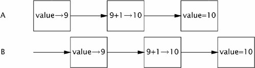

{% include JB/setup %}
{% raw %}
<div>


<a name="ch01lev1sec3" class="calibre18" id="ch01lev1sec3"></a>
<h3 id="title-IDAKFXDS" class="docSection1Title">1.3. Risks of Threads</h3>
<p class="docText1">Java's built-in support for threads is a double-edged sword. While it simplifies the development of concurrent applications by providing language and library support and a formal cross-platform memory model (it is this formal cross-platform memory model thatmakes possible the development of write-once, run-anywhere <span class="docEmphasis">concurrent</span> applications in Java), it also raises the bar for developers because more programs will use threads. When threads were more esoteric, concurrency was an "advanced" topic; now, mainstream developers must be aware of thread-safety issues.</p>
<a name="ch01lev2sec5" class="calibre18" id="ch01lev2sec5"></a>
<h4 id="title-IDAYFXDS" class="docSection2Title">1.3.1. Safety Hazards</h4>
<p class="docText1">Thread safety can be unexpectedly subtle because, in the absence of sufficient synchronization, the ordering of operations in multiple threads is unpredictable and sometimes surprising. <tt class="calibre25">UnsafeSequence</tt> in <a class="calibre2" href="#ch01list01">Listing 1.1</a>, which is supposed to generate a sequence of unique integer values, offers a simple illustration of how the interleaving of actions in multiple threads can lead to undesirable results. It behaves correctly in a single-threaded environment, but in a multithreaded environment does not.</p>
<p class="docText1"></p><a name="ch01list01" class="calibre18" id="ch01list01"></a><h5 id="title-IDAQGXDS" class="docExampleTitle">Listing 1.1. Non-thread-safe Sequence Generator.</h5><p class="calibre21"><table cellspacing="0" width="90%" border="1" cellpadding="5" class="calibre5"><tr class="calibre6"><td class="calibre28">

<pre class="calibre30">@NotThreadSafe
public class UnsafeSequence {
    private int value;

    <span class="docEmphasis">/** Returns a unique value. */</span>
    public int getNext() {
        return value++;
    }
}
</pre><br class="calibre11"/>
</td></tr></table></p>
<p class="docText1"><a name="iddle1094" class="calibre18" id="iddle1094"></a><a name="iddle1635" class="calibre18" id="iddle1635"></a><a name="iddle1636" class="calibre18" id="iddle1636"></a><a name="iddle1637" class="calibre18" id="iddle1637"></a><a name="iddle1959" class="calibre18" id="iddle1959"></a><a name="iddle2537" class="calibre18" id="iddle2537"></a><a name="iddle2768" class="calibre18" id="iddle2768"></a><a name="iddle2769" class="calibre18" id="iddle2769"></a><a name="iddle3338" class="calibre18" id="iddle3338"></a><a name="iddle4465" class="calibre18" id="iddle4465"></a><a name="iddle4466" class="calibre18" id="iddle4466"></a>The problem with <tt class="calibre25">UnsafeSequence</tt> is that with some unlucky timing, two threads could call <tt class="calibre25">getNext</tt> and receive <span class="docEmphasis">the same value</span>. <a class="calibre2" href="#ch01fig01">Figure 1.1</a> shows how this can happen. The increment notation, <tt class="calibre25">nextValue++</tt>, may <span class="docEmphasis">appear</span> to be a single operation, but is in fact three separate operations: read the value, add one to it, and write out the new value. Since operations in multiple threads may be arbitrarily interleaved by the runtime, it is possible for two threads to read the value at the same time, both see the same value, and then both add one to it. The result is that the same sequence number is returned from multiple calls in different threads.</p>
<a name="ch01fig01" class="calibre18" id="ch01fig01"></a><p class="calibre21"><div class="calibre12">
<h5 class="docExampleTitle">Figure 1.1. Unlucky Execution of <tt class="calibre33">UnsafeSequence.Nextvalue</tt>.</h5>
</div></p><p class="docText1">
</p>
<p class="calibre1"> </p>
<a name="ch01sb01" class="calibre18" id="ch01sb01"></a><p class="calibre21"><table cellspacing="0" width="90%" border="1" cellpadding="5" class="calibre5"><tr class="calibre6"><td class="calibre28">
<p class="docText1">Diagrams like <a class="calibre2" href="#ch01fig01">Figure 1.1</a> depict possible interleavings of operations in different threads. In these diagrams, time runs from left to right, and each line represents the activities of a different thread. These interleaving diagrams usually depict the worst case<sup class="docFootnote"><a class="calibre2" href="#ch01fn02">[2]</a></sup> and are intended to show the danger of incorrectly assuming things will happen in a particular order.</p>
</td></tr></table></p><p class="calibre1"> </p><blockquote class="calibre19"><p class="docFootnote1"><sup class="calibre27"><a name="ch01fn02" class="calibre18" id="ch01fn02">[2]</a></sup> Actually, as we'll see in <a class="calibre2" href="ch03.html#ch03">Chapter 3</a>, the worst case can be even worse than these diagrams usually show because of the possibility of reordering.</p></blockquote>
<p class="docText1"><tt class="calibre25">UnsafeSequence</tt> uses a nonstandard annotation: <tt class="calibre25">@NotThreadSafe</tt>. This is one of several custom annotations used throughout this book to document concurrency properties of classes and class members. (Other class-level annotations used <a name="iddle1395" class="calibre18" id="iddle1395"></a><a name="iddle1396" class="calibre18" id="iddle1396"></a><a name="iddle2175" class="calibre18" id="iddle2175"></a><a name="iddle2481" class="calibre18" id="iddle2481"></a><a name="iddle2621" class="calibre18" id="iddle2621"></a><a name="iddle2622" class="calibre18" id="iddle2622"></a><a name="iddle2703" class="calibre18" id="iddle2703"></a><a name="iddle3415" class="calibre18" id="iddle3415"></a><a name="iddle3416" class="calibre18" id="iddle3416"></a><a name="iddle3544" class="calibre18" id="iddle3544"></a><a name="iddle3545" class="calibre18" id="iddle3545"></a><a name="iddle3776" class="calibre18" id="iddle3776"></a><a name="iddle3777" class="calibre18" id="iddle3777"></a><a name="iddle3778" class="calibre18" id="iddle3778"></a><a name="iddle4020" class="calibre18" id="iddle4020"></a><a name="iddle4021" class="calibre18" id="iddle4021"></a><a name="iddle4022" class="calibre18" id="iddle4022"></a><a name="iddle4566" class="calibre18" id="iddle4566"></a><a name="iddle4860" class="calibre18" id="iddle4860"></a><a name="iddle48911" class="calibre18" id="iddle48911"></a><a name="iddle4915" class="calibre18" id="iddle4915"></a>in this way are <tt class="calibre25">@ThreadSafe</tt> and <tt class="calibre25">@Immutable</tt>; see <a class="calibre2" href="app01.html#app01">Appendix A</a> for details.) Annotations documenting thread safety are useful to multiple audiences. If a class is annotated with <tt class="calibre25">@THReadSafe</tt>, users can use it with confidence in a multithreaded environment, maintainers are put on notice that it makes thread safety guarantees that must be preserved, and software analysis tools can identify possible coding errors.</p>
<p class="docText1"><tt class="calibre25">UnsafeSequence</tt> illustrates a common concurrency hazard called a <span class="docEmphasis">race condition</span>. Whether or not <tt class="calibre25">nextValue</tt> returns a unique value when called from multiple threads, as required by its specification, depends on how the runtime interleaves the operationswhich is not a desirable state of affairs.</p>
<p class="docText1">Because threads share the same memory address space and run concurrently, they can access or modify variables that other threads might be using. This is a tremendous convenience, because it makes data sharing much easier than would other inter-thread communications mechanisms. But it is also a significant risk: threads can be confused by having data change unexpectedly. Allowing multiple threads to access and modify the same variables introduces an element of nonsequentiality into an otherwise sequential programming model, which can be confusing and difficult to reason about. For a multithreaded program's behavior to be predictable, access to shared variables must be properly coordinated so that threads do not interfere with one another. Fortunately, Java provides synchronization mechanisms to coordinate such access.</p>
<p class="docText1"><tt class="calibre25">UnsafeSequence</tt> can be fixed by making <tt class="calibre25">getNext</tt> a <tt class="calibre25">synchronized</tt> method, as shown in <tt class="calibre25">Sequence</tt> in <a class="calibre2" href="#ch01list02">Listing 1.2</a>,<sup class="docFootnote"><a class="calibre2" href="#ch01fn03">[3]</a></sup> thus preventing the unfortunate interaction in <a class="calibre2" href="#ch01fig01">Figure 1.1</a>. (Exactly why this works is the subject of <a class="calibre2" href="ch02_split_000.html#ch02">Chapters 2</a> and <a class="calibre2" href="ch03.html#ch03">3</a>.)</p><blockquote class="calibre19"><p class="docFootnote1"><sup class="calibre27"><a name="ch01fn03" class="calibre18" id="ch01fn03">[3]</a></sup> <tt class="calibre35">@GuardedBy</tt> is described in <a class="calibre2" href="ch02lev1sec4.html#ch02lev1sec4">Section 2.4</a>; it documents the <span class="docEmphasis">synchronization policy</span> for <tt class="calibre35">Sequence</tt>.</p></blockquote>
<a name="ch01list02" class="calibre18" id="ch01list02"></a><h5 id="title-IDARXXDS" class="docExampleTitle">Listing 1.2. Thread-safe Sequence Generator.</h5><p class="calibre21"><table cellspacing="0" width="90%" border="1" cellpadding="5" class="calibre5"><tr class="calibre6"><td class="calibre28">
<pre class="calibre30">@ThreadSafe
public class Sequence {
    <span class="docEmphStrong">@GuardedBy("this")</span> private int nextValue;

    public <span class="docEmphStrong">synchronized</span> int getNext() {
        return nextValue++;
    }
}
</pre><br class="calibre11"/>
</td></tr></table></p>
<p class="docText1">In the absence of synchronization, the compiler, hardware, and runtime are allowed to take substantial liberties with the timing and ordering of actions, such as caching variables in registers or processor-local caches where they are temporarily (or even permanently) invisible to other threads. These tricks are in aid of better performance and are generally desirable, but they place a burden on the developer to clearly identify where data is being shared across threads so that these optimizations do not undermine safety. (<a class="calibre2" href="ch16.html#ch16">Chapter 16</a> gives the gory details on exactly what ordering guarantees the JVM makes and how synchronization <a name="iddle1261" class="calibre18" id="iddle1261"></a><a name="iddle1279" class="calibre18" id="iddle1279"></a><a name="iddle1614" class="calibre18" id="iddle1614"></a><a name="iddle1693" class="calibre18" id="iddle1693"></a><a name="iddle1694" class="calibre18" id="iddle1694"></a><a name="iddle1709" class="calibre18" id="iddle1709"></a><a name="iddle1758" class="calibre18" id="iddle1758"></a><a name="iddle1797" class="calibre18" id="iddle1797"></a><a name="iddle1991" class="calibre18" id="iddle1991"></a><a name="iddle2074" class="calibre18" id="iddle2074"></a><a name="iddle2075" class="calibre18" id="iddle2075"></a><a name="iddle2616" class="calibre18" id="iddle2616"></a><a name="iddle2950" class="calibre18" id="iddle2950"></a><a name="iddle3014" class="calibre18" id="iddle3014"></a><a name="iddle3015" class="calibre18" id="iddle3015"></a><a name="iddle3016" class="calibre18" id="iddle3016"></a><a name="iddle3028" class="calibre18" id="iddle3028"></a><a name="iddle3031" class="calibre18" id="iddle3031"></a><a name="iddle3037" class="calibre18" id="iddle3037"></a><a name="iddle3038" class="calibre18" id="iddle3038"></a><a name="iddle3422" class="calibre18" id="iddle3422"></a><a name="iddle3423" class="calibre18" id="iddle3423"></a><a name="iddle3424" class="calibre18" id="iddle3424"></a><a name="iddle3425" class="calibre18" id="iddle3425"></a><a name="iddle3426" class="calibre18" id="iddle3426"></a><a name="iddle3477" class="calibre18" id="iddle3477"></a><a name="iddle3478" class="calibre18" id="iddle3478"></a><a name="iddle3479" class="calibre18" id="iddle3479"></a><a name="iddle3480" class="calibre18" id="iddle3480"></a><a name="iddle3481" class="calibre18" id="iddle3481"></a><a name="iddle3494" class="calibre18" id="iddle3494"></a><a name="iddle3495" class="calibre18" id="iddle3495"></a><a name="iddle3511" class="calibre18" id="iddle3511"></a><a name="iddle3512" class="calibre18" id="iddle3512"></a><a name="iddle3543" class="calibre18" id="iddle3543"></a><a name="iddle3907" class="calibre18" id="iddle3907"></a><a name="iddle3908" class="calibre18" id="iddle3908"></a><a name="iddle3974" class="calibre18" id="iddle3974"></a><a name="iddle4087" class="calibre18" id="iddle4087"></a><a name="iddle4227" class="calibre18" id="iddle4227"></a><a name="iddle4372" class="calibre18" id="iddle4372"></a><a name="iddle4759" class="calibre18" id="iddle4759"></a><a name="iddle4760" class="calibre18" id="iddle4760"></a><a name="iddle4761" class="calibre18" id="iddle4761"></a><a name="iddle4867" class="calibre18" id="iddle4867"></a><a name="iddle4878" class="calibre18" id="iddle4878"></a>affects those guarantees, but if you follow the rules in <a class="calibre2" href="ch02_split_000.html#ch02">Chapters 2</a> and <a class="calibre2" href="ch03.html#ch03">3</a>, you can safely avoid these low-level details.)</p>
<a name="ch01lev2sec6" class="calibre18" id="ch01lev2sec6"></a>
<h4 id="title-IDA1OYDS" class="docSection2Title">1.3.2. Liveness Hazards</h4>
<p class="docText1">It is critically important to pay attention to thread safety issues when developing concurrent code: safety cannot be compromised. The importance of safety is not unique to multithreaded programssingle-threaded programs also must take care to preserve safety and correctnessbut the use of threads introduces additional safety hazards not present in single-threaded programs. Similarly, the use of threads introduces additional forms of <span class="docEmphasis">liveness failure</span> that do not occur in single-threaded programs.</p>
<p class="docText1">While <span class="docEmphasis">safety</span> means "nothing bad ever happens", liveness concerns the complementary goal that "something good eventually happens". A liveness failure occurs when an activity gets into a state such that it is permanently unable to make forward progress. One form of liveness failure that can occur in sequential programs is an inadvertent infinite loop, where the code that follows the loop never gets executed. The use of threads introduces additional liveness risks. For example, if thread <span class="docEmphasis">A</span> is waiting for a resource that thread <span class="docEmphasis">B</span> holds exclusively, and <span class="docEmphasis">B</span> never releases it, <span class="docEmphasis">A</span> will wait forever. <a class="calibre2" href="ch10.html#ch10">Chapter 10</a> describes various forms of liveness failures and how to avoid them, including deadlock (<a class="calibre2" href="ch10lev1sec1.html#ch10lev1sec1">Section 10.1</a>), starvation (<a class="calibre2" href="ch10lev1sec3.html#ch10lev2sec8">Section 10.3.1</a>), and livelock (<a class="calibre2" href="ch10lev1sec3.html#ch10lev2sec10">Section 10.3.3</a>). Like most concurrency bugs, bugs that cause liveness failures can be elusive because they depend on the relative timing of events in different threads, and therefore do not always manifest themselves in development or testing.</p>
<a name="ch01lev2sec7" class="calibre18" id="ch01lev2sec7"></a>
<h4 id="title-IDAWQYDS" class="docSection2Title">1.3.3. Performance Hazards</h4>
<p class="docText1">Related to liveness is <span class="docEmphasis">performance</span>. While liveness means that something good <span class="docEmphasis">eventually</span> happens, eventually may not be good enoughwe often want good things to happen quickly. Performance issues subsume a broad range of problems, including poor service time, responsiveness, throughput, resource consumption, or scalability. Just as with safety and liveness, multithreaded programs are subject to all the performance hazards of single-threaded programs, and to others as well that are introduced by the use of threads.</p>
<p class="docText1">In well designed concurrent applications the use of threads is a net performance gain, but threads nevertheless carry some degree of runtime overhead. <span class="docEmphasis">Context switches</span>when the scheduler suspends the active thread temporarily so another thread can runare more frequent in applications with many threads, and have significant costs: saving and restoring execution context, loss of locality, and CPU time spent scheduling threads instead of running them. When threads share data, they must use synchronization mechanisms that can inhibit compiler optimizations, flush or invalidate memory caches, and create synchronization traffic on the shared memory bus. All these factors introduce additional performance costs; <a class="calibre2" href="ch11.html#ch11">Chapter 11</a> covers techniques for analyzing and reducing these costs.</p>

<p class="calibre1"> </p>

</div>

{% endraw %}

